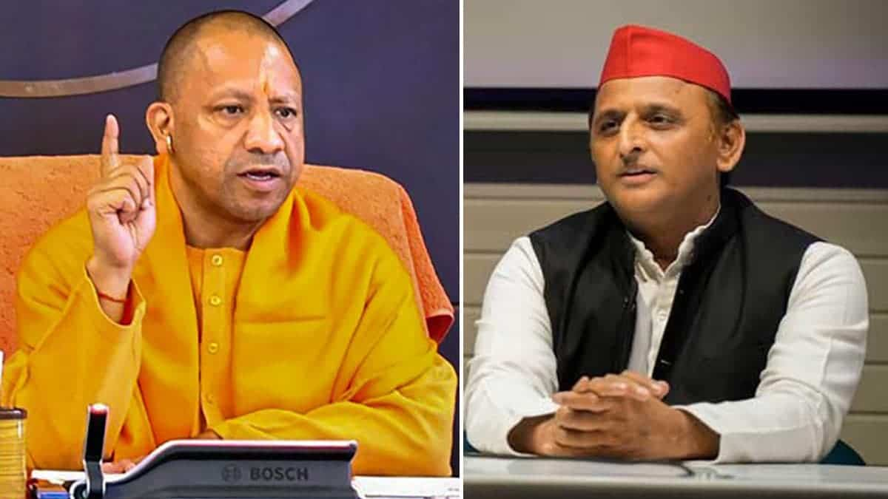
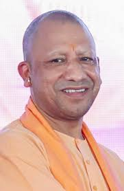
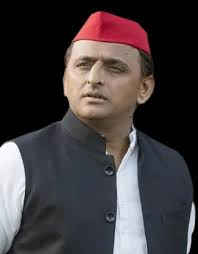

Yogi Adityanath vs Akhilesh Yadav: Who Leads Better in 2025?
In the political landscape of Uttar Pradesh, two prominent leaders stand out in 2025 — Yogi Adityanath and Akhilesh Yadav. With the state preparing for another key election, let’s compare their style, work, and public perception.
Comparison Table: Yogi Adityanath vs Akhilesh Yadav
| Category |  Yogi Adityanath |  Akhilesh Yadav |
|---|---|---|
| Political Party | BJP (Bharatiya Janata Party) | SP (Samajwadi Party) |
| Position | Chief Minister of Uttar Pradesh | Leader of Opposition in UP Assembly |
| Leadership Style | Strong, disciplined, ideology-driven | Youthful, modern, welfare-focused |
| Ideology | Hindutva, nationalism, security | Socialism, secularism, social justice |
| Support Base | Urban voters, upper castes, nationalists | Farmers, OBCs, youth, secular groups |
| Key Focus Areas | Law & order, infrastructure, religion | Education, digital development, social welfare |
Ideology and Vision
Yogi Adityanath promotes Hindutva, emphasizing cultural nationalism and strong state control. His governance reflects discipline, nationalism, and religious pride.
Akhilesh Yadav leans toward socialism and secularism, focusing on digital India, youth employment, and welfare policies that include all communities.
Party Background
BJP (Bharatiya Janata Party), led by Yogi in UP, emphasizes Hindu unity, development, and central leadership under PM Modi. It has a national presence and strategic vision.
SP (Samajwadi Party), founded by Mulayam Singh Yadav and now led by Akhilesh, champions social justice, regional identity, and farmer rights. It holds influence mostly in UP and nearby regions.
Leadership Journey
Yogi Adityanath started as a Hindu monk and became MP from Gorakhpur in 1998. In 2017, he became CM of UP and was re-elected in 2022, breaking previous records.
Akhilesh Yadav studied abroad and began political life in the early 2000s. In 2012, he became the youngest CM of UP, promoting metro lines, laptop schemes, and IT parks.
Public Support and Criticism
Yogi is seen as bold and no-nonsense, especially admired for infrastructure and law enforcement. Critics say he is too religiously polarizing.
Akhilesh is praised for his modern vision and calm demeanor. Critics point to weak law and order during his term and dependency on traditional caste alliances.
Final Thoughts
Both leaders have different strengths. Yogi Adityanath represents firm control and ideology, while Akhilesh Yadav reflects youth, technology, and inclusivity. The 2025 UP election will be a battle between these two approaches.
Explore more comparisons in our latest articles.